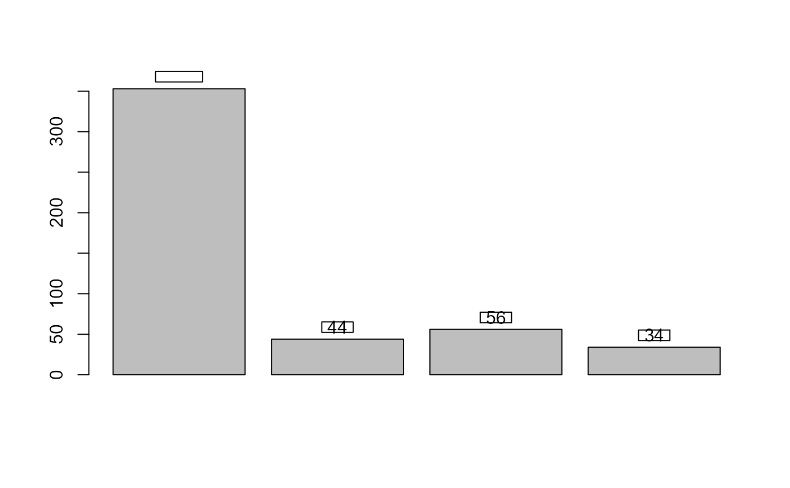
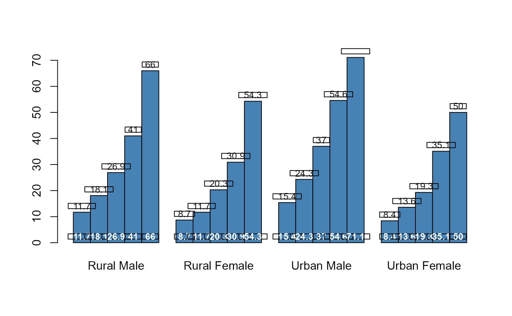
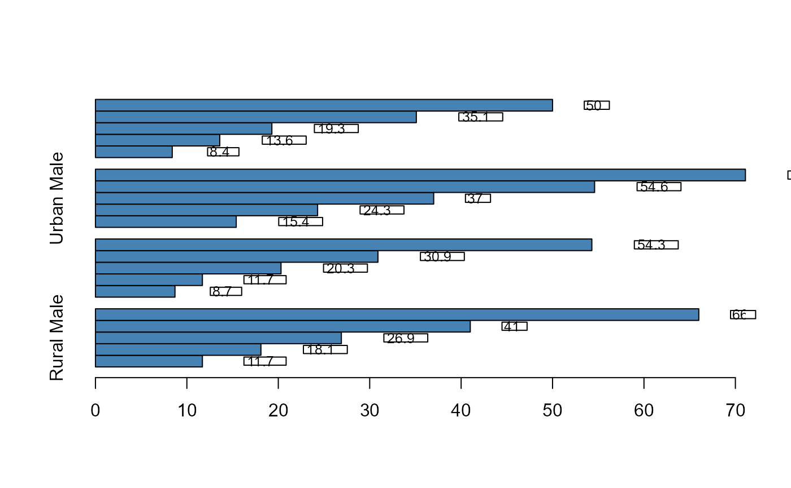
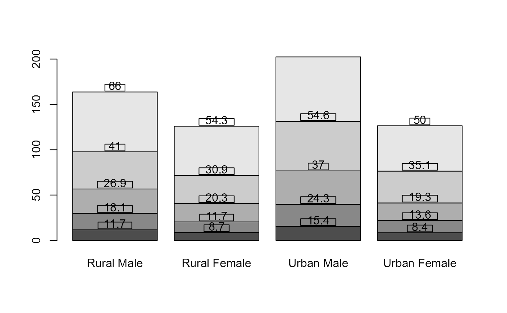
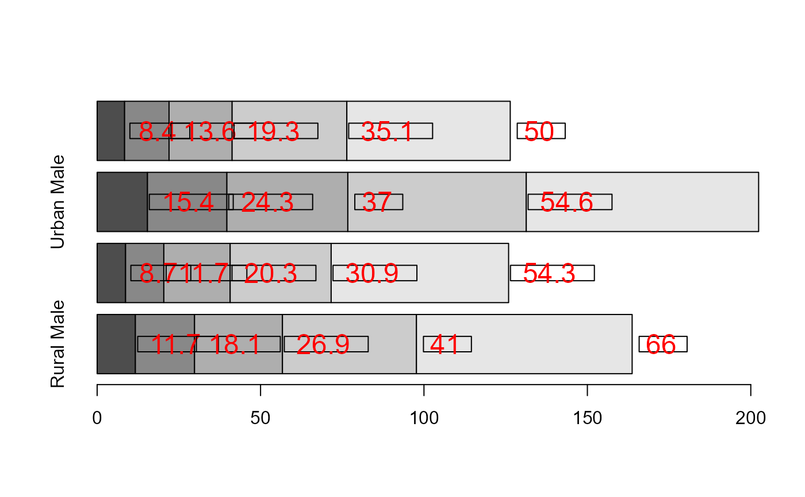

It can sometimes make sense to display data values directly on the bars in a barplot. There are a handful of obvious alternatives for placing the labels, either on top of the bars, right below the upper end, in the middle or at the bottom. Determining the required geometry - although not difficult - is cumbersome and the code is distractingly long within an analysis code. The present function offers a short way to solve the task. It can place text either in the middle of the stacked bars, on top or on the bottom of a barplot (side by side or stacked).
Arguments
- height
either a vector or matrix of values describing the bars which make up the plot exactly as used for creating the barplot.
- b
the returned mid points as returned by
b <- barplot(...).- labels
the labels to be placed on the bars.
- beside
a logical value. If
FALSE, the columns of height are portrayed as stacked bars, and ifTRUEthe columns are portrayed as juxtaposed bars.- horiz
a logical value. If
FALSE, the bars are drawn vertically with the first bar to the left. IfTRUE, the bars are drawn horizontally with the first at the bottom.- cex
numeric character expansion factor; multiplied by
par("cex")yields the final character size.NULLandNAare equivalent to1.0.- adj
one or two values in
[0, 1]which specify the x (and optionally y) adjustment of the labels. On most devices values outside that interval will also work.- pos
one of
"topout","topin","mid","bottomin","bottomout", defining if the labels should be placed on top of the bars (inside or outside) or at the bottom of the bars (inside or outside).- offset
a vector indicating how much the bars should be shifted relative to the x axis.
- col
the color and to be used, possibly a vector (default in par("col")).
- ...
the dots are passed to the
boxedText.
Details
The x coordinates of the labels can be found by using
barplot() result, if they are to be centered at the top of
each bar. barText() calculates the rest.

Notice that when the labels are placed on top of the bars, they may be
clipped. This can be avoided by setting xpd=TRUE.
See also
Other graphics.utils:
abcCoords(),
axisBreak(),
boxedText(),
colLegend(),
degToRad(),
errBars(),
lineSep(),
lineToUser(),
lines.lm(),
mar(),
preview(),
spreadOut(),
stamp(),
textLegend(),
titleRect(),
unit()
Examples
# simple vector
x <- c(353, 44, 56, 34)
b <- barplot(x)
barText(x, b, x)

# more complicated
b <- barplot(VADeaths, horiz = FALSE, col="steelblue", beside = TRUE)
barText(VADeaths, b=b, horiz = FALSE, beside = TRUE, cex=0.8)
barText(VADeaths, b=b, horiz = FALSE, beside = TRUE, cex=0.8, pos="bottomin",
col="white", font=2)

b <- barplot(VADeaths, horiz = TRUE, col="steelblue", beside = TRUE)
barText(VADeaths, b=b, horiz = TRUE, beside = TRUE, cex=0.8)

b <- barplot(VADeaths)
barText(VADeaths, b=b)

b <- barplot(VADeaths, horiz = TRUE)
barText(VADeaths, b=b, horiz = TRUE, col="red", cex=1.5)
